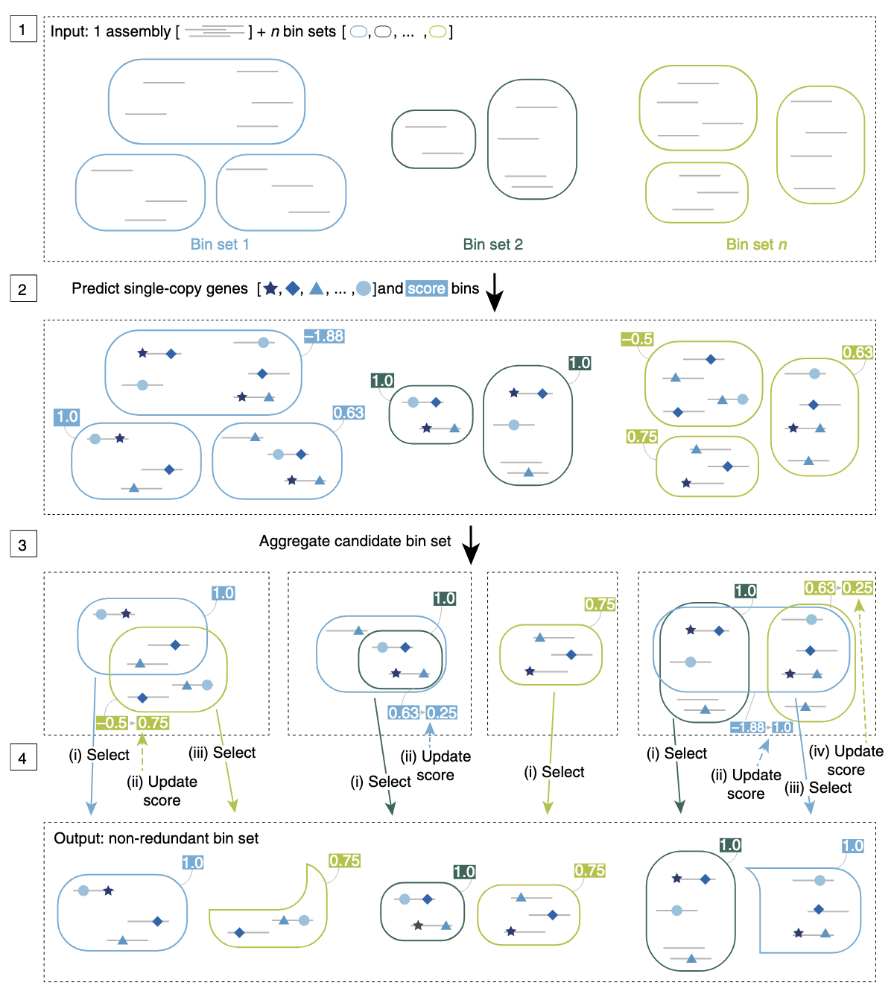
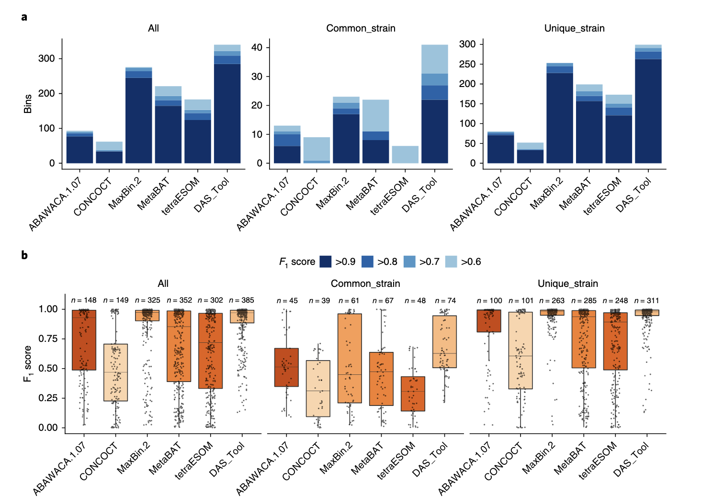
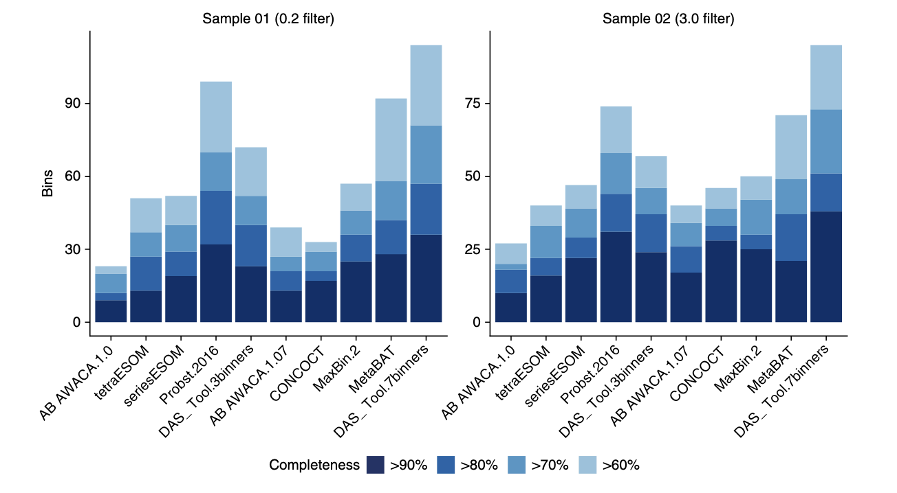

Introduction
在宏基因组学研究中，准确地将组装后的基因组片段（contigs）归属到各自的微生物基因组中，是解析微生物群落功能和生态关系的关键步骤。然而，很多分箱（binning）方法在面对复杂的微生物群落时，常常难以重建出高质量的基因组，且不同工具在不同样本和生态环境中的表现差异显著。
为了解决这一问题，研究人员开发了DAS Tool（Dereplication, Aggregation and Scoring Tool），这是一种自动化的方法，能够整合多个已有的分箱算法的结果，生成优化的、非冗余的高质量基因组集合。在多个复杂环境样本中，DAS Tool展示了比任何单一分箱工具更强的能力，能够恢复更多接近完整的基因组，包括一些之前未被发现的谱系。本文将介绍使用DAS Tool优化宏基因组分箱结果，提升基因组重建的质量和数量。
DAS Tool的文章于2018年发表于Nature Microbiology，软件主页：https://github.com/cmks/DAS_Tool，logo也很有意思。
工作流程
Step 1｜整合多种分箱结果
DAS Tool 的输入包括：一个宏基因组组装（scaffolds）和来自不同 binning 工具的多个 bin 结果（每种颜色表示一个工具的输出）。这些分箱工具可能依据不同特征（如 GC 含量、k-mer 频率或丰度信息）进行聚类。
Step 2｜识别单拷贝基因并打分
DAS Tool 会在 scaffolds 上预测单拷贝标志基因（single-copy marker genes），并以此对每个 bin 进行质量打分（例如完整度和污染度），用于后续筛选。
Step 3｜合并候选 bin 并去除冗余
来自不同工具的 bin 可能存在重叠。DAS Tool 会将这些候选 bin 进行去冗余整合，构建一个统一的候选 bin 集合。
Step 4｜迭代优化与筛选
DAS Tool 通过迭代方式从所有候选 bin 中优先选择得分最高的，并在每轮迭代中更新剩余 bin 的得分（考虑重复和覆盖情况），最终输出一个非冗余、高质量的 bin 集合。
这个流程的关键在于：充分融合多个 binning 工具的优点，利用标志基因和打分机制，自动筛选出最优的 bin 组合，有效提升基因组重建的质量和覆盖范围。
效果评估
DAS Tool在模拟微生物群落中的表现验证
为了验证 DAS Tool 的效果，研究者将其应用于 CAMI challenge 提供的三种复杂度不同的模拟微生物群落数据集（包含 40、132 和 596 个基因组）。使用五种主流 binning 工具（ABAWACA、CONCOCT、MaxBin 2、MetaBAT、ESOM）分别预测分箱，并用 DAS Tool 进行整合优化。
在高复杂度（596 个基因组）数据集中，DAS Tool 重建的高质量基因组数量（F1 分数 > 0.6）显著高于任何单一工具：
- DAS Tool： 共识菌株 41 个、唯一菌株 299 个
- 次优 MaxBin 2： 共识菌株 23 个、唯一菌株 253 个
- ESOM： 虽对唯一菌株效果尚可（173 个），但对存在菌株变异的基因组恢复能力较差（仅 6 个）
此外，DAS Tool 重建的基因组 F1 分数中位数也优于其它工具，尤其在处理菌株变异时展现出更强的能力。不仅在高复杂度样本中表现优越，在中低复杂度数据集上也优于单一方法。
DAS Tool在真实环境样本中的应用
Probst 等人曾从高 CO₂ 冷泉系统中构建了一个经过精细人工筛选的基因组分箱集，成为评估 DAS Tool 表现的理想样本。这些数据来自对不同滤膜（3.0 μm 与 0.2 μm）过滤后的样品进行组装，并采用三种 binning 方法 + 人工校正获得结果。
研究者对原始发表的 bins 及不同 binning 工具（ABAWACA 1.0/1.07、ESOM、CONCOCT、MetaBAT、MaxBin 2）与 DAS Tool 的整合结果进行了对比评估。质量评估采用 CheckM，高质量定义为 >90% 完整度且污染率 <5%。
主要发现如下：
- 使用3种工具整合的 DAS Tool 已超过任一单一方法的效果，但略低于人工精修结果。
- 使用7种工具整合的 DAS Tool 成果优于原始发表结果：
- 0.2 μm 样本： DAS Tool 重建 36 个近全基因组，高于原始的 32 个；
- 3.0 μm 样本： DAS Tool 重建 38 个，高于原始的 31 个；
- 草稿级基因组数量也全面提升。
- 当适度放宽污染率阈值时，草稿基因组数量进一步增加。
在真实环境样本中，DAS Tool 同样展现出强大整合能力，尤其当结合更多 binning 工具时，不仅能提高高质量基因组的数量，也能有效替代部分人工精修过程。
使用方法
安装
1. 最简单的安装方式：使用 conda
|
|
但我发现conda安装好了之后也需要下载github主页的db.zip文件并解压，后续运行需指定db目录，不然默认用当前目录下的db：
|
|
2. 手动安装（需满足以下依赖项）
- R (>= 3.2.3)：https://www.r-project.org
- R 包：
data.table(>= 1.9.6)magrittr(>= 2.0.1)docopt(>= 0.7.1)
- ruby (>= 2.3.1)：https://www.ruby-lang.org
- Pullseq (>= 1.0.2)：https://github.com/bcthomas/pullseq
- Prodigal (>= 2.6.3)：https://github.com/hyattpd/Prodigal
- coreutils（仅 macOS 需要）：https://www.gnu.org/software/coreutils
- 以下三种搜索引擎之一：
- DIAMOND (>= 0.9.14)：推荐，用于大数据集：https://ab.inf.uni-tuebingen.de/software/diamond
- BLAST+ (>= 2.5.0)：https://blast.ncbi.nlm.nih.gov/Blast.cgi
- USEARCH (>= 8.1)：http://www.drive5.com/usearch/download.html
注意：USEARCH 免费版仅支持最多 4GB 内存，因此推荐使用 DIAMOND 或 BLAST+。
|
|
|
|
3. 使用 Docker
|
|
参数说明
安装完成后，可以通过 DAS_Tool -h 查看可用参数：
|
|
输入文件准备
1. 多个 binning 工具的输出 [--bins, -i]
每个 binning 工具生成的 contig-to-bin 表格，TSV 格式：
|
|
不是所有 binning 工具都直接生成此格式。可使用官方提供的脚本
Fasta_to_Contigs2Bin.sh进行转换，在github主页上：
|
|
某些工具如 CONCOCT 输出为 CSV，可用 perl 一行命令转为 TSV：
|
|
2. 组装后的 contig 文件 [--contigs, -c]
FASTA 格式，如：
|
|
3. 可选：预测蛋白序列 [--proteins]
若已有 prodigal 预测结果（.faa 格式），可跳过基因预测步骤。
运行 DAS Tool
基本命令格式如下：
|
|
参数说明：
-i：多个 binning 工具的 contigs-to-bin TSV 文件（用逗号连接），注意逗号之间绝对不能有空格，不然会引发Docopt报错-l：与-i对应的 binning 工具名称（用逗号连接）-c：组装后 contigs 的 FASTA 文件-o：输出文件名前缀
示例：
|
|
输出结果
运行后将生成以下输出文件：
*_DASTool_summary.tsv：输出 bin 的质量与完整性评估汇总*_DASTool_contigs2bin.tsv：最终 contigs-to-bin 映射表*_allBins.eval：若启用--write_bin_evals，输出输入 bin 的评估结果DASTool_bins/：若启用--write_bins，输出整合后的 bin（FASTA 格式）
示例数据与测试
使用 GitHub 提供的 sample_data：
示例 1：使用 4 个 bin 工具结果运行 DAS Tool
|
|
用了4核，对于一个32M的contig文件，用时1min，内存占用200MB。
示例 2：设置更多参数，跳过基因预测，输出评估结果，输出最终的bins，使用多线程
|
|
承接MetaWRAP输出结果
MetaWRAP是我们之前介绍过的一个binning流程工具，假如我们一开始已经用MetaWRAP进行了3种工具的binning，现在我们想用DAS_Tool来进行进一步的优化，那么可以用如下命令：
|
|
那么在INITIAL_BINNING_${i}文件夹下会有如下文件夹：
INITIAL_BINNING_KY01867_1_T006D/ ├── concoct_bins ├── maxbin2_bins ├── metabat2_bins └── work_files
我们使用DAS_Tool进行整合：
|
|
References
- Sieber, C.M.K., Probst, A.J., Sharrar, A. et al. Recovery of genomes from metagenomes via a dereplication, aggregation and scoring strategy. Nat Microbiol 3, 836–843 (2018). https://doi.org/10.1038/s41564-018-0171-1